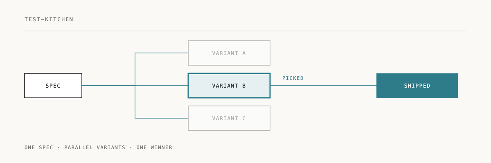

Test Kitchen

You have a spec. Three valid approaches exist. Instead of guessing which one to build, Test Kitchen builds all of them in parallel git worktrees and lets your tests pick the winner.
Read more: Cookoff: Same Spec, Different Code · Omakase: Show Me
Parallel implementation framework with two gate skills:
| Skill | Gate | Trigger |
|---|---|---|
test-kitchen:omakase-off | Entry | FIRST on any build/create/implement request |
test-kitchen:cookoff | Exit | At design→implementation transition |
Installation
/plugin marketplace add 2389-research/claude-plugins
/plugin install test-kitchen@2389-research
Flow
"Build X" / "Create Y" / "Implement Z"
↓
┌─────────────────────────────────────┐
│ OMAKASE-OFF (entry gate) │
│ Wraps brainstorming │
│ │
│ Choice: │
│ 1. Brainstorm together │
│ 2. Omakase (3-5 parallel designs) │
└─────────────────────────────────────┘
↓
[Brainstorming / Design phase]
↓
Design complete, "let's implement"
↓
┌─────────────────────────────────────┐
│ COOKOFF (exit gate) │
│ Wraps implementation │
│ │
│ Choice: │
│ 1. Cookoff (2-5 parallel agents) │
│ 2. Single subagent │
│ 3. Local implementation │
└─────────────────────────────────────┘
↓
[Implementation]
Quick examples
Entry gate: omakase-off
When you make a build/create request:
User: "Build a notification system"
Claude: I'm using test-kitchen:omakase-off.
How would you like to explore this?
1. Brainstorm together - We'll work through the design step by step
2. Omakase - I'll generate 3-5 best approaches, implement in parallel, tests pick winner
Which approach?
Option 1 (Brainstorm) proceeds to brainstorming skill (or fallback brainstorming), with passive slot detection.
Option 2 (Omakase) does the following:
- Quick context gathering (1-2 questions)
- Generate 3-5 architectural approaches
- Implement ALL in parallel via git worktrees
- Run same scenario tests on each
- Fresh-eyes review survivors
- Present comparison, user picks winner
During brainstorming, slot detection can also trigger it:
Claude: What storage approach would you prefer?
User: "not sure, either could work"
Claude: [marks storage as architectural slot]
Claude: For authentication?
User: "no preference, you pick"
Claude: [marks auth as slot, detects 2+ uncertain responses]
You seem flexible on the approach. Would you like to:
1. I'll pick what seems best and continue
2. Explore multiple approaches in parallel (omakase-off)
→ I'll implement 2-3 variants and let tests decide
Exit gate: cookoff
User: "Looks good, let's implement"
Claude: I'm using test-kitchen:cookoff.
How would you like to implement this design?
1. Cookoff (recommended) - 3 parallel agents, each creates own plan, pick best
→ Complexity: medium feature
2. Single subagent - One agent plans and implements
3. Local - Plan and implement here
Which approach?
Option 1 (Cookoff):
- Each agent reads the same design doc
- Each agent creates their OWN implementation plan
- All implement in parallel
- Fresh-eyes review, compare results
- User picks winner
Options 2/3 -- single agent or local implementation proceeds normally.
Why aggressive triggers
Skills can't passively detect "uncertainty" or "readiness" -- they must claim specific moments in the conversation flow.
- Omakase-off claims the BUILD/CREATE moment (before brainstorming)
- Cookoff claims the IMPLEMENT moment (after design)
Dependencies
Test Kitchen orchestrates these skills (falls back gracefully if not installed):
superpowers:brainstormingsuperpowers:writing-planssuperpowers:executing-planssuperpowers:using-git-worktreessuperpowers:dispatching-parallel-agentssuperpowers:test-driven-developmentsuperpowers:verification-before-completionscenario-testing:skillsfresh-eyes-review:skillssuperpowers:finishing-a-development-branch
Documentation
- CLAUDE.md -- full plugin instructions
- Omakase-off skill -- entry gate (wraps brainstorming)
- Cookoff skill -- exit gate (wraps implementation)
Origin
Named after a restaurant test kitchen, where chefs try multiple approaches before putting a dish on the menu.
---
If Test Kitchen saved you from building the wrong approach first, a ⭐ helps us know it's landing.
Built by 2389 · Part of the Claude Code plugin marketplace